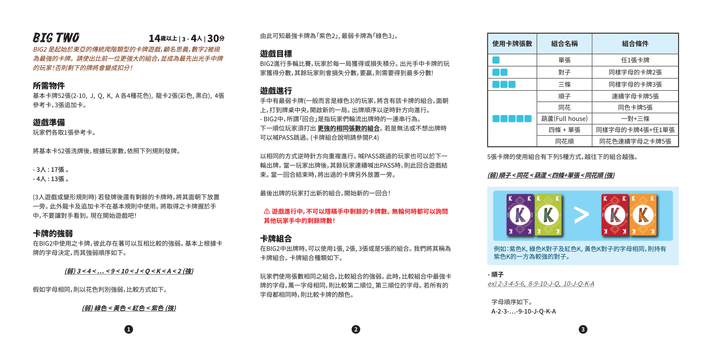
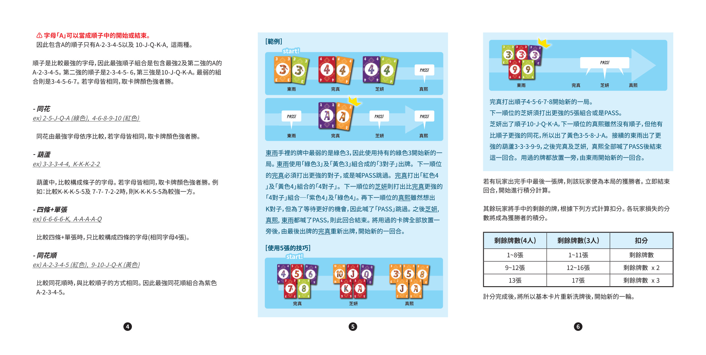
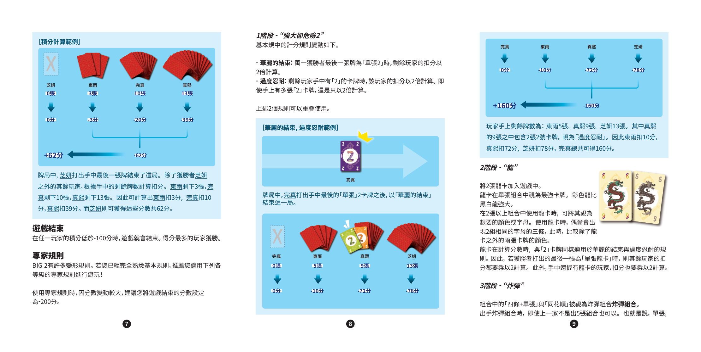
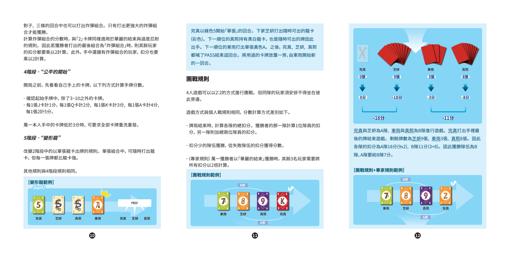
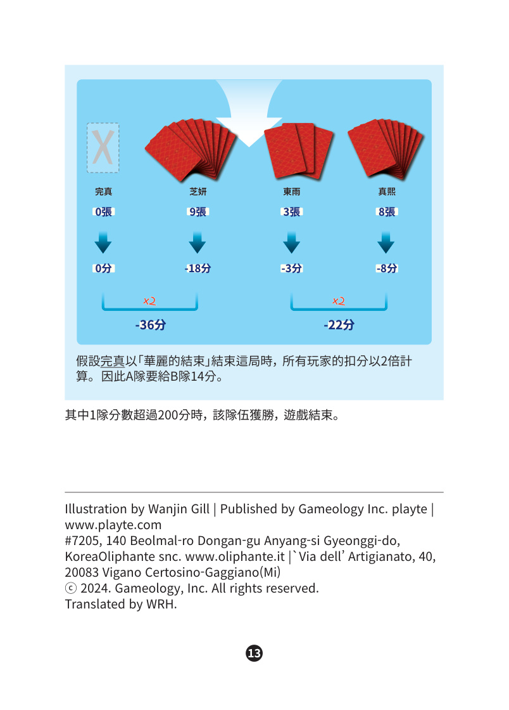

1简介
BIG 2 是起始于东亚的传统升级类的卡牌游戏，顾名思义，数字 2 被视为最强的卡牌。请使出比前一位更强大的组合，并成为最先出光手中牌的玩家！否则剩下的牌将会变成扣分。
2配件
2–10、J、Q、K、A 各 4 种花色
彩色、黑白各 1 张（专家规则使用）
每位玩家 1 张
专家规则使用
3准备
- 玩家们各取 1 张参考卡。
- 将基本卡 52 张洗牌后，根据玩家数，依照下列规则发牌：
- 3 人：每人 17 张
- 4 人：每人 13 张
- 若发牌后还有剩余的卡牌，将其面朝下放置一旁。龙卡和追加卡在基本规则中不使用。
- 将取得的卡牌握在手中，不要让对手看到。
现在就可以开始游戏了！
4卡牌强弱
在 BIG 2 中使用的卡牌，彼此存在着可以相互比较的强弱。基本上根据卡牌的字母决定，其强弱顺序如下：
如果字母相同，则以花色判别强弱，顺序如下：
由此可知，最强卡牌为「紫 2」，最弱卡牌为「绿 3」。
5游戏目标
BIG 2 进行多轮比赛，玩家于每一局获得或损失积分。出光手中卡牌的玩家获得分数，其余玩家则会损失分数。要赢，则需要得到最多分数！
6游戏进行
手中有最弱卡牌（一般而言是绿 3）的玩家，将含有该卡牌的组合面朝上打到牌桌中央，开启新的一局。出牌顺序以逆时针方向进行。
下一顺位玩家须打出更强的相同张数的组合。若是无法或不想出牌时可以喊 跳过 跳过。（卡牌组合说明请参阅 §7）
以相同的方式逆时针方向重复进行。喊 跳过 跳过的玩家也可以于下一轮出牌。当一玩家出牌后，其余玩家连续喊出 跳过 时，则此回合游戏结束。当一回合结束时，将出过的卡牌另外放置一旁。
最后出牌的玩家打出新的组合，开始新的一回合！
完整回合示例（对子回合）
起手时东雨手牌中最弱的是绿色 3，因此他用绿色 3 开启新一局。
- 东雨：打出绿色 3 + 黄色 3，组成「3 对子」
- 完真：打出红色 4 + 黄色 4，组成「4 对子」
- 芝妍：打出紫色 4 + 绿色 4，组成更强的「4 对子」
- 真熙：虽想出 K 对子，但为等待更好机会，喊 跳过
- 芝妍、东雨、真熙此后都跳过 → 本回合结束。用过的牌放一旁，由完真重新出牌，开始新一回合。
完整回合示例（5 张回合）
新一回合由完真用顺子开始：
- 完真：打出顺子 4-5-6-7-8
- 芝妍：打出更强的顺子 10-J-Q-K-A
- 真熙：虽无更强顺子，但有比顺子强的同花，打出 黄色 3-5-8-J-A
- 东雨：打出更强的葫芦 3-3-3-9-9
- 完真、芝妍、真熙此后都跳过 → 本回合结束。用过的牌放一旁，由东雨开始新一回合。
若有玩家出完手中最后一张牌，则该玩家即为本局获胜者，本回合立即结束，进入计分。
7卡牌组合
在 BIG 2 中出牌时，可以使用 1 张、2 张、3 张或 5 张的组合，称之为「卡牌组合」。组合种类如下：
玩家们使用张数相同的组合，比较组合的强弱。此时，比较组合中最强卡牌的字母；若字母相同，则比较第二顺位、第三顺位的字母；若所有的字母都相同时，则比较卡牌的颜色。
5 张组合的强弱
5 张卡牌的使用组合有下列 5 种方式，越往下的组合越强：
85 张组合详解
顺子
字母顺序：A-2-3-…-9-10-J-Q-K-A
因此含 A 的顺子只有 A-2-3-4-5 和 10-J-Q-K-A 两种。
顺子是比较最强的字母，因此：
- 最强顺子：包含最强 2 和次强 A 的 A-2-3-4-5
- 第二强：2-3-4-5-6
- 第三强：10-J-Q-K-A
- 最弱：3-4-5-6-7
若字母皆相同，取卡牌颜色强者胜。
同花
同花由最强字母依序比较；若字母皆相同，取卡牌颜色强者胜。
葫芦
葫芦中，比较构成三条的字母；若字母皆相同，取卡牌颜色强者胜。
例：比较 K-K-K-5-5 与 7-7-7-2-2 时，K-K-K-5-5 为较强一方。
四条 + 单张
比较时只比较构成四条的字母（相同字母 4 张）。
同花顺
比较方式与比较顺子相同。因此最强同花顺组合为紫色 A-2-3-4-5。
9计分
若有玩家出完手中最后一张牌，则该玩家即为本局的获胜者。立即结束回合，开始进行积分计算。
其余玩家将手中剩余的牌，根据下列方式计算扣分。各玩家损失的分将成为获胜者的积分。
| 4 人局剩余牌数 | 3 人局剩余牌数 | 扣分 |
|---|---|---|
| 1 ~ 8 张 | 1 ~ 11 张 | 剩余牌数 |
| 9 ~ 12 张 | 12 ~ 16 张 | 剩余牌数 × 2 |
| 13 张 | 17 张 | 剩余牌数 × 3 |
牌局中，芝妍打出手中最后一张牌结束了这局。除了获胜者芝妍之外的其余玩家，根据手中的剩余牌数计算扣分：东雨剩 3 张，完真剩 10 张，真熙剩 13 张。因此可计算出：东雨扣 3 分、完真扣 10 分、真熙扣 39 分（13 × 3）。芝妍则可获得这些分数共 62 分。
计分完成后，将所有基本卡重新洗牌，开始新一轮。
10游戏结束
当任一玩家的积分低于 -100 分时，游戏即结束。得分最多的玩家获胜。
11专家规则
BIG 2 有许多变形规则。如果您已经完全熟悉基本规则，推荐您适用下列各等级的专家规则进行游玩！
1 阶段强大却危险的 2
基本规则中的计分规则变动如下：
- 华丽的结束：万一获胜者最后一张牌为「单张 2」时，剩余玩家的扣分以 2 倍 计算。
- 过度忍耐：剩余玩家手中有「2」的卡牌时，该玩家的扣分以 2 倍 计算。即使手上有多张「2」卡牌，还是只以 2 倍计算。
上述 2 个规则可以叠加使用。
完真打出手中最后的「单张 2」卡牌，以「华丽的结束」结束本局。剩余玩家牌数为：东雨 5 张、真熙 9 张、芝妍 13 张。其中真熙的 9 张之中包含 2 张 2 号卡牌，视为「过度忍耐」。因此东雨扣 10 分、真熙扣 72 分、芝妍扣 78 分，完真总共可得 160 分。
2 阶段龙
将 2 张龙卡加入游戏中。
- 龙卡在单张组合中视为最强卡牌。彩色龙比黑白龙 强大。
- 在 2 张以上的组合中使用龙卡时，可将其视为想要的任何颜色或字母。使用龙卡时，偶尔会出现 2 组相同字母的三条，此时比较除了龙卡之外的 2 张卡牌的颜色。
龙卡在计算分数时，与「2」卡牌同样适用「华丽的结束」与「过度忍耐」规则。因此，若获胜者打出的最后一张为「单张龙卡」时，则其余玩家的扣分都要乘以 2 计算；此外，手中握有龙卡的玩家，扣分也要乘以 2 计算。
3 阶段炸弹
组合中的「四条+单张」与「同花顺」被视为炸弹组合。
- 出手炸弹组合时，即使上一家不是出 5 张组合也可以。也就是说，单张、对子、三条的回合中也可以打出炸弹组合。
- 只有打出更强大的炸弹组合才能获胜。
计算炸弹组合的分数时，与「2」卡牌同样适用「华丽的结束」与「过度忍耐」规则。因此若获胜者打出的最后组合为「炸弹组合」时，则其余玩家的扣分都要乘以 2 计算；此外，手中握有炸弹组合的玩家，扣分也要乘以 2 计算。
4 阶段公平的開始
开局之前，先看看自己手上的卡牌，按下列方式计算手牌分数：
- 确认起始手牌中，除了 3 ~ 10 之外的卡牌。
- 每 1 张 J 计 1 分，每 1 张 Q 计 2 分，每 1 张 K 计 3 分，每 1 张 A 计 4 分，每 1 张 2 计 5 分。
万一本人手中的卡牌低于 3 分 时，可要求全部卡牌重洗重发。
5 阶段变形龙
改变 2 阶段中以单张龙卡出牌的规则。在单张组合中，可随时打出龙卡，但每一张牌都比龙卡强。
其他规则与 4 阶段规则相同。
12团战规则
4 人游戏可以以 2 : 2 的方式进行团战。同队的玩家须安排不得坐在彼此旁边。
游戏方式与个人战规则相同，分数计算方式差别如下：
- 牌局结束时，计算各队的总扣分。获胜者的那一队计算 1 位队员的扣分，另一队则加总两位队员的扣分。
- 扣分少的队伍获胜，从失败队伍的扣分获得分数。
- （专家规则）万一获胜者以「华丽的结束」获胜时，其余 3 名玩家需要将所有扣分以 2 倍 计算。
完真与芝妍为 A 队，东雨与真熙为 B 队。完真打出手里最后的牌结束游戏，剩余牌数为：芝妍 9 张、东雨 3 张、真熙 8 张。各队的扣分为：A 队 18 分（9 × 2）、B 队 11 分（3 + 8）。因此获胜队伍为 B 队，A 队要给 B 队 7 分。
假设完真以「华丽的结束」结束本局时，所有玩家的扣分以 2 倍计算，因此 A 队要给 B 队 14 分。
其中 1 队 分数超过 200 分 时，该队伍获胜，游戏结束。





13制作信息
插画（插画）：Wanjin Gill
繁体中文翻译（翻译）：WRH
出版（出版）：Gameology Inc. | playte | www.playte.com
韩国发行：#7205, 140 Beolmal-ro, Dongan-gu, Anyang-si, Gyeonggi-do, Korea
欧洲代理：Oliphante snc. · Via dell'Artigianato, 40, 20083 Vigano Certosino-Gaggiano(Mi), Italy · www.oliphante.it
ⓒ 2024. Gameology, Inc. All rights reserved.
本规则书的简体中文版以 Gameology 2024 年繁体中文版（Big 2 / 譯：WRH）为权威源，正文已做简繁转换（繁体「雇」→「雇」、「營」→「营」、「錢」→「钱」、「們」→「们」、「個」→「个」、「數」→「数」、「點」→「点」、「時→「时」、「從」→「从」、「過」→「过」、「畫」→「画」、「飽」→「饱」、「畫」→「画」、「還」→「还」、「會」→「会」、「種」→「种」、「幣」→「币」、「飯」→「饭」、「顯」→「显」、「應」→「应」、「頭」→「头」、「變」→「变」、「條」→「条」、「複」→「复」、「歐」→「欧」、「東→「东」、「點」→「点」、「聲」→「声」、「輸」→「输」、「軟」→「软」、「兒→「儿」、「韓」→「韩」、「隻」→「只」、「長」→「长」、「塊」→「块」、「製」→「制」、「讀」→「读」、「擊」→「击」、「雙」→「双」、「臉」→「脸」、「語」→「语」、「誰」→「谁」、「樣→「样」、「處→「处」、「螢」→「萤」、「齡」→「龄」、「術」→「术」、「樣」→「样」等）；专有名词（游戏名「Big 2 / 锄大弟」、花色「绿 / 黄 / 红 / 紫」、龙卡「彩色 / 黑白」、人名、地名、公司）保留原文。